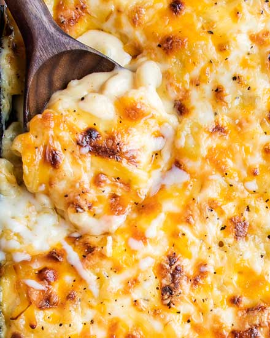

Mac and Cheese!

This baked mac and cheese is a family favorite recipe,
loved by both children and adults. It uses a combination of cheeses,
layered in the dish as well as melted into a rich and creamy cheese sauce,
for the ultimate in cheesy deliciousness!
Perfect for a comforting dinner or as a holiday side dish!
Ingredients!
- 1 lb. dried elbow pasta
- 1/2 cup unsalted butter
- 1/2 cup all purpose flour
- 1 1/2 cups whole milk
- 2 1/2 cups half and half
- 4 cups grated medium sharp cheddar cheese
- 1/2 Tbsp. salt
- 1/2 tsp. black pepper
- 1/4 tsp. paprika
Steps!
- Preheat pven to 325 degrees
- Boil pasta until al-dente
- Create cheese mixture
- Combine pasta and cheese mixture
- Bake for 15 minutes then enjoy!